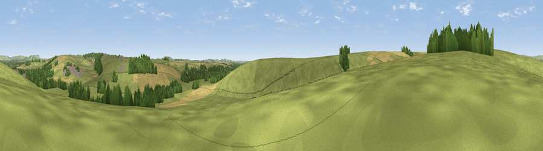

Viewpoint near Upavon
#40208 in England · top 86% of its area beats it · near UpavonThe view, rendered

A 360° render of this exact spot computed from the terrain model, tree cover and land cover — summer colours, afternoon light, calibrated against photographs of famous viewpoints. Real trees, hedges and buildings will differ in detail.
The panorama
Grey silhouette: terrain skyline in each direction (720 bearings, Earth curvature and refraction included). Dashed green: skyline with trees (+15 m) and buildings (+8 m) as obstacles. Blue strip: how far the ground is visible on each bearing.
Where the view opens
Wedge length = distance to the farthest visible ground on that bearing (vegetation-aware). Rings at 10, 25 and 50 km.
What fills the view
72% grassland · 17% cropland · 10% woodland ·
Angular shares of the visible panorama (visual magnitude), not map area. Landscape diversity 0.35 (0–1 Shannon).
Key numbers
More beautiful places nearby
The staircase of upgrades: each row has a higher view potential than everything closer. Driving times are estimates from straight-line distance, calibrated against real road routing — check an actual route before setting out.
| Place | Direction | Drive | Score |
|---|---|---|---|
| Viewpoint near Enford | S · 1 km | ~3 min | 39.0 |
| Viewpoint near Upavon | NW · 1 km | ~3 min | 46.6 |
| Viewpoint near Charlton St Peter | NW · 3 km | ~8 min | 50.8 |
| Viewpoint near Pewsey | NE · 6 km | ~12 min | 57.0 |
| Milton Hill | NE · 8 km | ~16 min | 62.3 |
| Viewpoint near Milton Lilbourne | NE · 8 km | ~16 min | 62.7 |
| Viewpoint near Urchfont | WNW · 9 km | ~18 min | 66.5 |
| Viewpoint near Alton Priors | N · 10 km | ~20 min | 70.3 |
51.28207, -1.81463 · source: screening · position refined by local search. Computed location — check access rights before visiting.